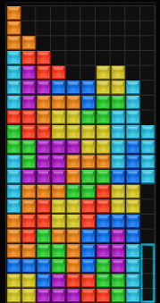
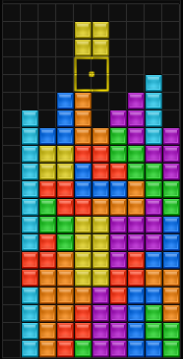
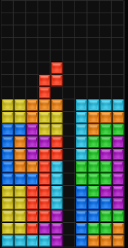

There are infinitely many ways a Tetris game can play out. Here are some cemented techniques on getting that high score up.
The most important part of Tetris is organizing your blocks to make way for the next pieces in the queue. Glancing at the NEXT queue often is something that is overlooked, as many players become overwhelmed with figuring out where the current piece will go.
A semi-flat orientation is the sort of playing field to go for. Let's analyze a playing field:
There's a few things to take in here. First, the player has arranged the blocks in such a way that there is a single column left open to score Tetrises in using the straight-line piece. This single column is usually called a "well." Since the well is on the right side, this type of structure is called a "right well." Next, notice that the top blocks on the left are a bit jagged, yet it becomes smoother as it progresses to the right. This is the semi-flatness of the field, and virtually any block, if rotated correctly, can fit nicely in any of those spaces.
Let's look at another.
Here's an example of a left well playing field that is too jagged. Pieces like the Z and S block can fit nicely in two of the spaces, but where is the box piece going to go? Well, one solution is to place it on top of the orange and blue pieces, but it puts the player at risk of going past the top of the board.
Let's analyze one more.
Above is a very flat, center well playing field. In Tetris games using the SRS this type of playing field can also be optimal due to lock delay, as players have the time to neatly tuck pieces under other pieces if needed. However, since the NRS has very little lock delay, it makes this technique harder on higher levels with faster speeds for games with this system. In the example above, the red piece on top cannot be hard dropped anywhere without forming a gap (but it can form a hole suitable for a T-Spin).
Not all the time will the playing field be neat. But to keep it as neat as possible, piece burning is a great way to ensure your playing field doesn't get too high or the well you've made doesn't get blocked.
Take a look at this video.
In this case, the red Z-block was "burned," or used to level out the right side of the tower. Burning is especially useful in games with the NRS, since, as stated before, tucking is a usually difficult move to perform with said system.
This is my and a lot of other experienced players' preferred field. With a six-three, there is a well set in the seventh column from the left, but it may also periodically serve as a T-spin gap. Due to the majority of blocks being three wide, holding right until the piece touches the wall whenever such a block is given makes this stacking method very quick. The right side is usually filled with L, J, and the box blocks, with the box blocks nestling inside the gaps the L and J blocks have.